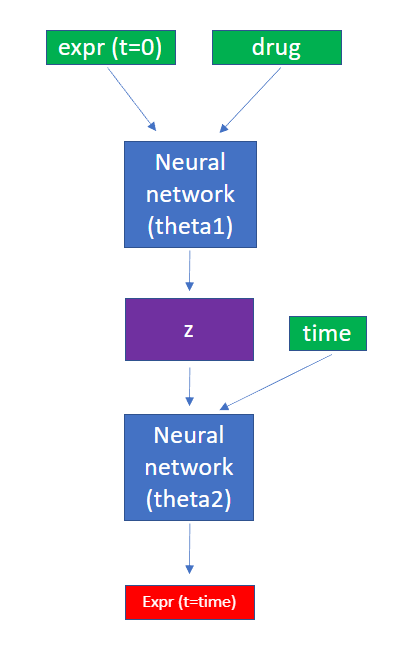

Naive Neural Network (naiveNN)
This represents the baseline model; which has no way of including prior knowledge of protein-protein interactions (PPIs).
For the most part, this can be conceptualized as a simple feed forward neural network; however, we do employ a similar tactic to gnnCDR of fist predicting a time-agnostic latent representation for each gene and then using a shared set of parameters to predict a time series.

The expr (t=0) input represents the gene expression abundance at baseline (no drug), and is the expression value at time=0 in each expression time series. The drug input identifies the presence of a given perturbation - chemical perturbations are active when they have non-zero values, and which represent drug concentration. Genetic perturbations are specified as active with an arbitrary value of 1. A feed forward fully connected neural network then predicts a latent representation z for every gene. This is intended to represent a time-agonistic representation of that genes expression time series, e.g., response to the perturbagen. The time-agnostic latent vector of each gene is then treated as input along with a specific time point (time in the figure) to a second neural network, which predicts a discrete expression value for every gene.
In this way, our model shares the time-series function across all genes. This was found to be a significant improvement over a classical neural network (e.g., no time-agnostic latent prediction or shared time-series function).
For convenience, we've added the data structures:
data.baseline
data.x
data.y
data.time
To the SynthHeteroDataset HeteroData object, which provides the relevant data in (observation, feature) views.
Example
To initialize a model:
data = train_dataset.__getitem__(0) # HeteroData object from SynthHeteroDataset
in_channels = data['protein'].num_nodes + data.pert_all.size(1) # input channels to neural network (not including time)
out_channels = data['protein'].num_nodes # number of genes
dropout = 0.15 # regularization parameter
num_layers = 2 # number of fully connected layers
hidden_channels = 100 # number of hidden units in each layer
model = gnn_cdr.model.NaiveNN(in_channels=in_channels,
out_channels=out_channels,
hidden_channels=hidden_channels,
num_layers=num_layers,
dropout=dropout)